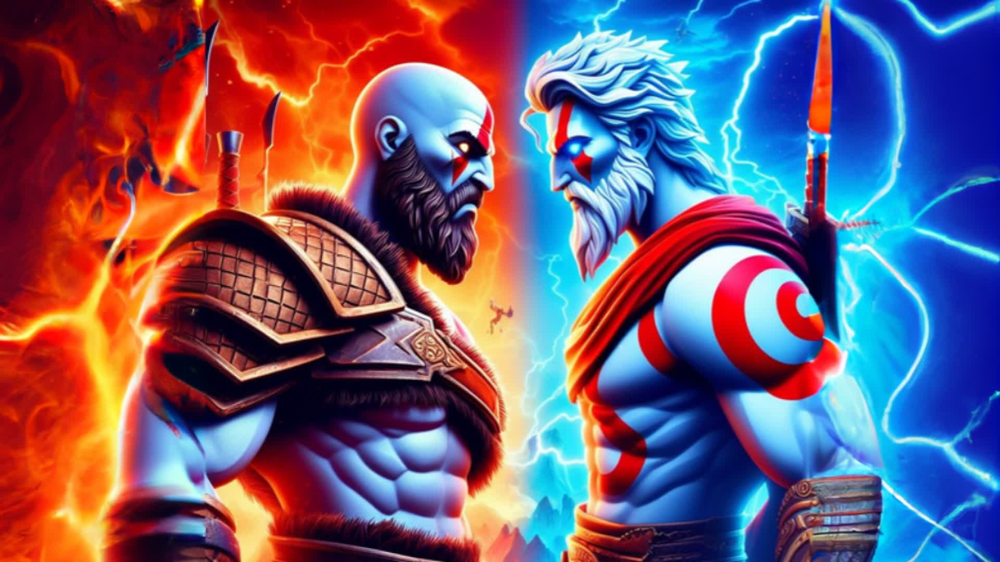
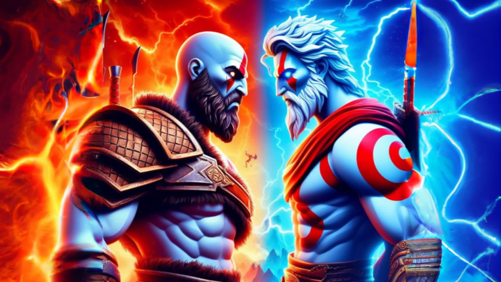

Kratos
Kratos, nasceu em Esparta, uma cidade-estado grega. Para se ter uma noção de sua relevância e força. Ele nada mais é do que filho de Zeus com Calisto, e uma mulher mortal.
Greek warrior
Greek warrior, o guerreiro soube com Atena que Zeus é, na verdade, seu pai, um fato que Zeus manteve em segredo porque ele queria evitar a repetição do que ele fez com seu próprio pai, Cronos. Kratos rejeitou qualquer noção de relacionamento e prometeu matar Zeus e destruir o Olimpo.
Red warrior
kratos, um guerreiro espartano com pele pálida e tatuagens vermelhas. Seu design incorpora elementos da tragédia grega, com cicatrizes físicas e emocionais visíveis. Essas características visuais não apenas o tornam memorável, mas também simbolizam sua jornada de sofrimento e redenção.
Brutal warrior
kratos, é conhecido por sua tenacidade e por sua disposição de usar a força sem hesitação. Ele tem uma inteligência incrível, força sobre-humana e imensa habilidade física.
Merciless kratos
Kratos é impiedoso em sua busca por vingança, e sua ira é uma força motriz poderosa que o impulsiona a cometer atos de extrema violência. No entanto, essa mesma ira é uma fonte de tormento emocional para ele, pois o lembra constantemente das tragédias que ele próprio causou, incluindo a morte de sua esposa e filha. Essa dualidade entre a raiva exterior e o sofrimento interior é um dos aspectos mais marcantes de sua personalidade.
God of War
kratos disse. As mãos da morte não puderam me derrotar. As Irmãs do Destino não puderam me controlar. E você não vai durar até o fim do dia. Eu vou ter minha vingança!
kratos
Kratos empala Zeus no coração de Gaia e a batalha chega ao seu clímax. Com o poder de sua recém-salvadora e a esperança de Atena, ele finalmente derrota o deus do trovão, seu pai que o enganou tendo a sua vingança em uma épica batalha.